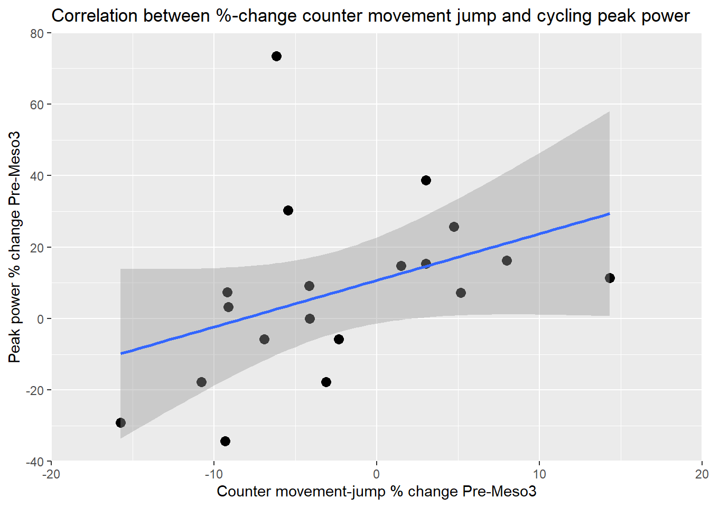
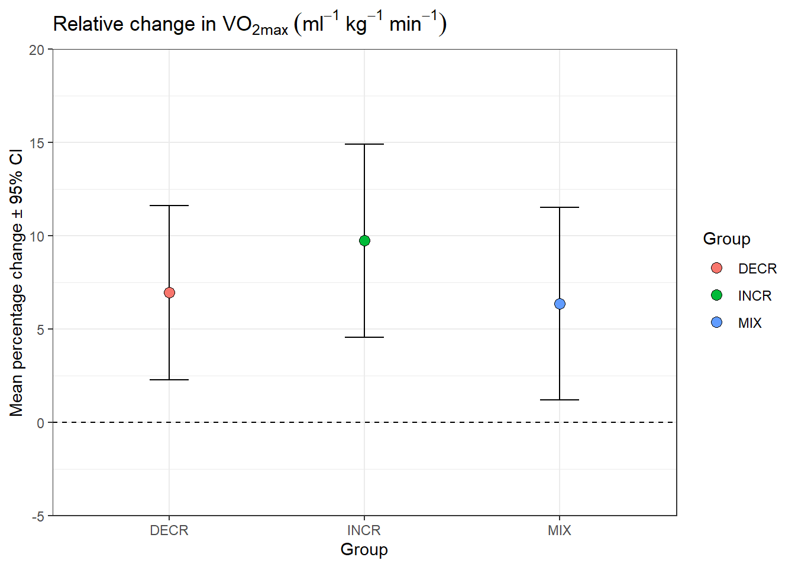
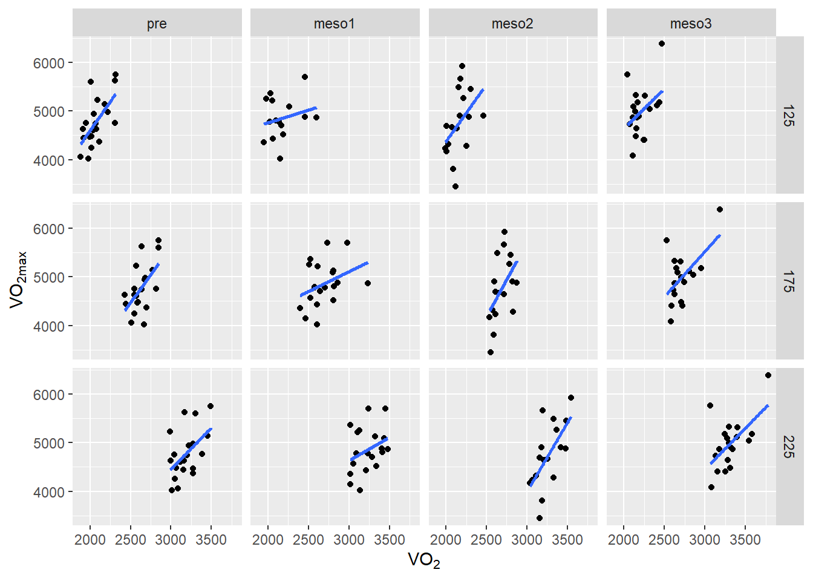
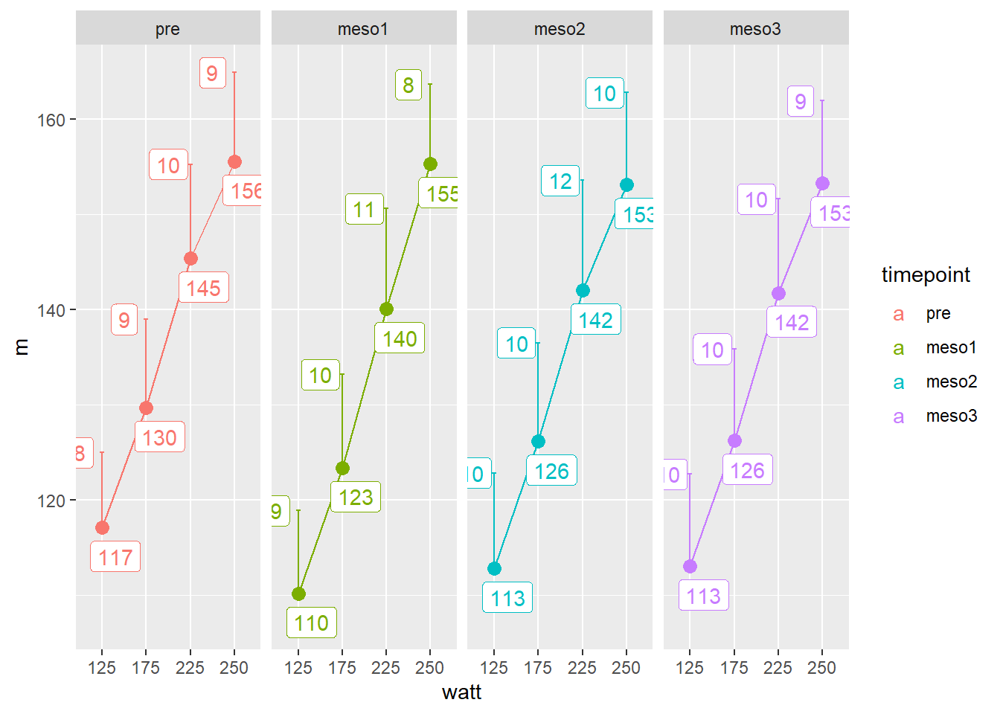

These are solutions for assignments week 1.
library(readxl); library(tidyverse)
read_excel("./data/cyclingStudy.xlsx", na = "NA") %>%
select(subject, timepoint, cmj.max, peak.power) %>%
pivot_longer(names_to = "test",
values_to = "values",
cols = c(cmj.max, peak.power)) %>%
filter(timepoint %in% c("pre", "meso3")) %>%
pivot_wider(names_from = timepoint,
values_from = values) %>%
mutate(change = ((meso3 - pre)/pre) * 100) %>%
select(subject, test, change) %>%
pivot_wider(names_from = test,
values_from = change) %>%
ggplot(aes(x = cmj.max, y = peak.power)) +
geom_point(size = 3) +
scale_x_continuous(limits = c(-20, 20),
breaks = c(-20, -10, 0, 10, 20),
expand = c(0, 0)) +
scale_y_continuous(limits = c(-40, 80),
breaks = c(-40, -20, 0, 20, 40, 60, 80),
expand = c(0, 0)) +
geom_smooth(method = "lm") +
labs(x = "Counter movement-jump % change Pre-Meso3",
y = "Peak power % change Pre-Meso3",
title = "Correlation between %-change counter movement jump and cycling peak power")
# expression can be used for subscript
# https://stat.ethz.ch/R-manual/R-devel/library/grDevices/html/plotmath.html
read_excel("./data/cyclingStudy.xlsx", na = "NA") %>%
select(subject, group, timepoint, VO2.max, weight.T1) %>%
mutate(vo2max = VO2.max / weight.T1) %>%
select(-VO2.max, -weight.T1) %>%
filter(timepoint %in% c("pre", "meso3")) %>%
pivot_wider(names_from = timepoint,
values_from = vo2max) %>%
mutate(change = ((meso3 - pre)/pre) * 100) %>%
group_by(group) %>%
summarise(m = mean(change, na.rm = TRUE),
s = sd(change, na.rm = TRUE),
n = sum(!is.na(change)),
error = qt(0.975, df = n - 1) * s/sqrt(n)) %>%
ggplot(aes(group, m, fill = group)) +
geom_errorbar(aes(ymin = m - error, ymax = m + error),
width = 0.2) +
geom_point(shape = 21, size = 3) +
scale_y_continuous(limits = c(-5, 20),
breaks = c(-5, 0, 5, 10, 15, 20),
expand = c(0, 0)) +
geom_hline(yintercept = 0, lty = "dashed") +
labs(y = "Mean percentage change \u00B1 95% CI",
x = "Group",
fill = "Group",
title = expression("Relative change in VO"["2max"]~(ml^-1~kg^-1~min^-1))) +
theme_bw()
read_excel("./data/cyclingStudy.xlsx", na = "NA") %>%
select(subject, timepoint, VO2.max, VO2.125:VO2.225) %>%
pivot_longer(names_to = "watt",
values_to = "VO2",
names_prefix = "VO2.",
cols = VO2.125:VO2.225) %>%
mutate(timepoint = factor(timepoint, levels = c("pre",
"meso1",
"meso2",
"meso3"))) %>%
ggplot(aes(VO2, VO2.max)) + geom_point() +
facet_grid(watt ~ timepoint) +
geom_smooth(method = "lm", se = FALSE) +
labs(x = expression("VO"["2"]),
y = expression("VO"["2max"]))
read_excel("./data/cyclingStudy.xlsx", na = "NA") %>%
select(subject, timepoint, HF.125:HF.250) %>%
mutate(timepoint = factor(timepoint,
levels = c("pre", "meso1",
"meso2", "meso3"))) %>%
pivot_longer(names_to = "watt",
values_to = "HF",
names_prefix = "HF.",
# names_ptypes = list(watt = numeric()),
cols = HF.125:HF.250) %>%
group_by(timepoint, watt) %>%
summarise(m = mean(HF, na.rm = TRUE),
s = sd(HF, na.rm = TRUE)) %>%
ggplot(aes(watt, m,
group = timepoint,
color = timepoint)) +
geom_line() +
geom_point(size = 3) +
geom_errorbar(aes(ymin = m, ymax = m + s),
width = 0.1) +
facet_grid(.~timepoint) +
geom_label(aes(label = round(m, 0)),
nudge_y = -3, nudge_x = 0.3) +
geom_label(aes(y = m + s, label = round(s, 0)),
nudge_x = -0.5) 